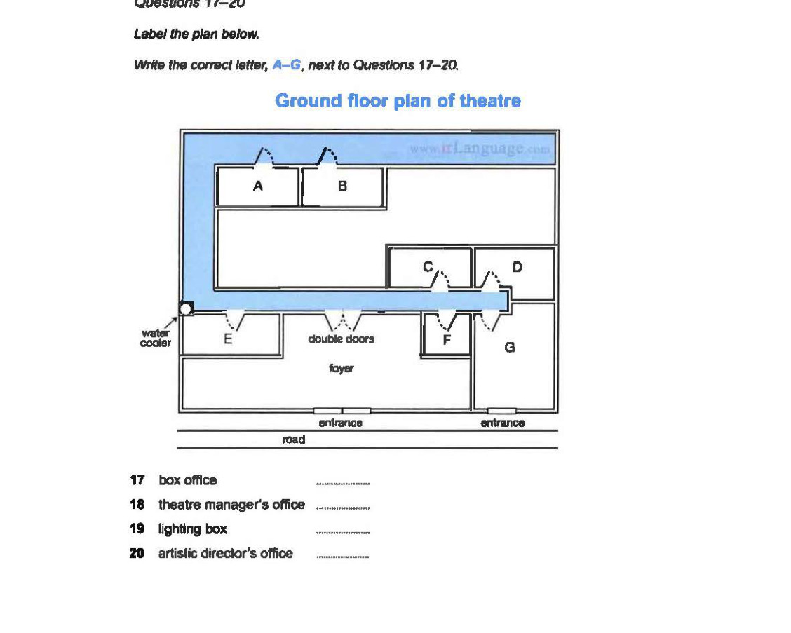

Cambridge IELTS 11
Time: approx. 30 minutes
Instructions
Digital recreation of Cambridge IELTS Listening Test 2.
Type answers in the gaps. Click options for multiple choice.
Print this page for paper-like practice.
Complete the notes below. Write ONE WORD AND/OR A NUMBER for each answer.
Questions 11–16: Choose TWO letters A–E. Questions 17–20: Label the plan A–G.
Click to select (max 2)
Click to select (max 2)
Click to select (max 2)

Questions 21–26: Choose A, B or C. Questions 27–28 and 29–30: Choose TWO letters A–E.
Click to select (max 2)
Click to select (max 2)
Complete the notes below. Write ONE WORD ONLY for each answer.
IELTS Listening Test 2 • Cambridge IELTS 11 • Practice recreation (content from official PDF)